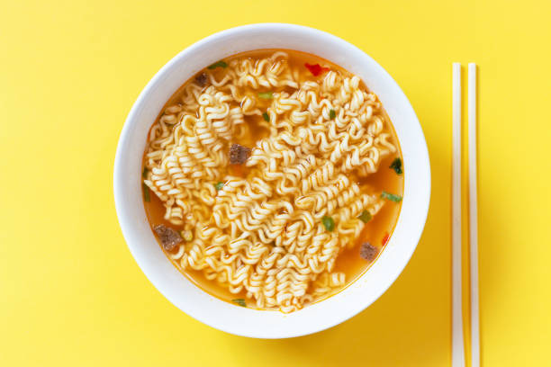

Home Page
Ramen Noodles

Description
Ramen noodles are a favorite asian dish that is easy to make and provides the opportunity for a DIY
flavor profile depending on what you're in the mood for!
Core Ingredients
- Ramen noodles
- 1 - 2 eggs
- Water
Steps
- Fill pot with water
- Turn stove burner on high and add pot of water to the burner
- Once water is boiling. Add in your noodles
- While the water is boiling - grab a pan and cook your eggs to your desired liking
- When noodles are cooked and your eggs are done strain your noodles and put them in a bowl
- Add desired flavor to noodles - see some options below!
- Soy sauce
- Chicken flavored powder
- Beef flavored powder
- Garlic
- Ginger
- Chili powder
- Add eggs to your bowl
- Stir and eat!